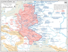

invasion

Definition: An invasion is a military offensive of combatants of one geopolitical entity, usually in large numbers, entering territory controlled by another similar entity, generally with the objective of either: conquering; liberating or re-establishing control or authority over a territory; forcing the partition of a country; altering the established government or gaining concessions from said government; or a combination thereof. An invasion can be the cause of a war, be a part of a larger strategy to end a war, or it can constitute an entire war in itself. Due to the large scale of the operations associated with invasions, they are usually strategic in planning and execution. Not every military offense with the goal to capture territory or remove a government is an invasion.
Source: Wikipedia
Wikipedia Page (Something wrong with this association? Let us know.)
Wikidata Page (Something wrong with this association? Let us know.)